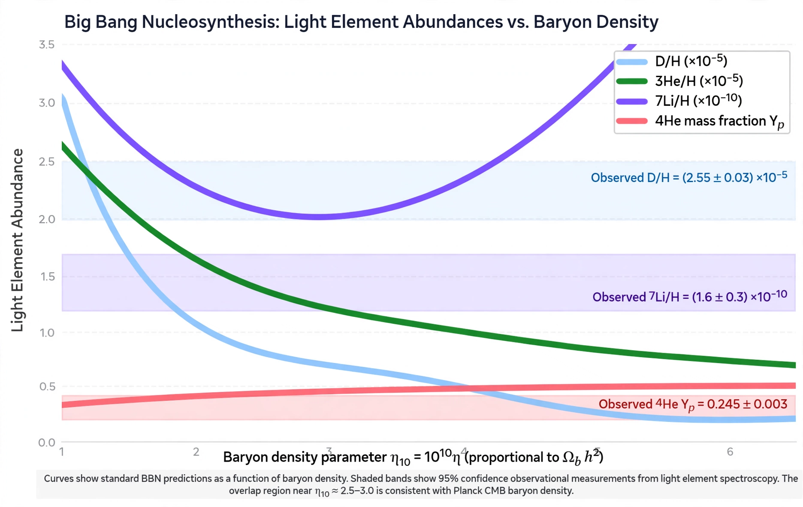

Big Bang nucleosynthesis

[Image: Chart of the predicted primordial abundances of light elements as a function of the baryon density]Big Bang nucleosynthesis (BBN, also primordial nucleosynthesis) is the production of nuclei other than the lightest isotope of hydrogen (protium) during the early phases of the universe, in roughly the first minutes after the Big Bang. As the universe expanded and cooled through temperatures of billions of degrees, protons and neutrons fused into deuterium, helium-3, helium-4 and trace lithium-7 — and could go no further, because there are no stable nuclei of masses 5 or 8.
The predicted abundances — about 25% helium-4 by mass, deuterium at ~2.5 × 10⁻⁵ relative to hydrogen — depend on essentially one parameter, the baryon density, and match observations of pristine gas clouds, making BBN (with George Gamow, Ralph Alpher and Robert Herman's 1948 work, and the Alpher–Bethe–Gamow paper) one of the pillars of the Big Bang model alongside the expansion and the Cosmic microwave background. The observed agreement also constrains the number of light particle species (neutrino families) present in the early universe.
The lithium problem
The long-standing discrepancy: old stars show about one-third the lithium-7 that BBN plus the Planck-measured baryon density predicts. Whether this is astrophysics (lithium burned or settled in stars), unaccounted nuclear rates, or new physics remains unresolved — one of cosmology's persistent small anomalies, echoing the history of the solar Neutrino problem.